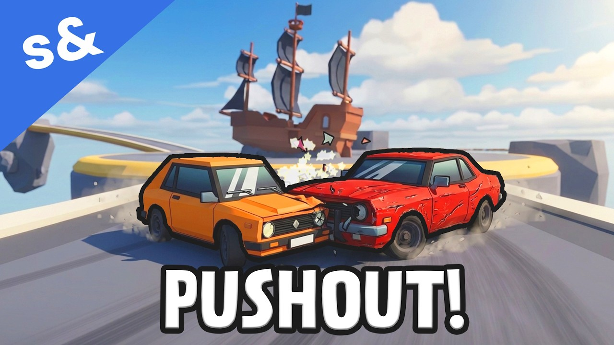

Pushout: Demolition Derby
Multiplayerowa walka samochodami na fizyce. Wytrzymaj na arenie 240 sekund i zepchnij rywali, zanim oni zepchną ciebie. Zrobiłem ją w pojedynkę, od pomysłu po LiveOps.
- Graczy łącznie
- 1665
- Łączny czas gry
- 18 dni
- Średnio na gracza
- 16 min
- Pozytywne recenzje
- 25
- Zespół
- Solo

Odtwórz gameplay Pushout: Demolition Derby (YouTube)Moja rola
- Projekt mechanik i balansTryb Sumo, czas meczu, respawn po 10 sekundach, sterowanie pędem pojazdu.
- Architektura kodu w C#Struktura projektu w s&box, gotowa na szybkie zmiany po feedbacku graczy.
- Sieciowa synchronizacja fizykiAutorytatywny host, bufor historii stanów i kompensacja opóźnienia: zderzenia działają tak samo u wszystkich graczy.
- UI, analityka i LiveOpsInterfejs, zbieranie statystyk i poprawki balansu wdrażane na żywo.
Wyzwanie: fizyka, która zgadza się u wszystkich
- Problem
- W grze opartej na zderzeniach każdy desync od razu psuje zabawę: auto, które u ciebie spadło z areny, u rywala dalej jedzie.
- Rozwiązanie
-
Hostowany, autorytatywny system zderzeń. Każdy gracz symuluje fizykę własnego auta, a host co tick (50 Hz) zapisuje stan każdego pojazdu w buforze historii z ostatnich 500 ms.
Przy zderzeniu klient wysyła tylko lekkie zgłoszenie: ID obu aut i punkt styku. Host sprawdza, czy nadawca jest właścicielem jednego z nich, cofa się w historii o połowę jego pingu (kompensacja opóźnienia) i liczy symetryczny impuls z prędkości zbliżania wzdłuż normalnej styku, stosunku mas i kąta uderzenia. Blokada pilnuje, żeby ta sama para nie została przeliczona dwa razy.
Wynik trafia do wszystkich, a każdy klient przykłada go do własnego auta. Lokalna, ciągła siła „rozpychania” daje natychmiastową reakcję na kontakt, bez czekania na odpowiedź serwera.
- Efekt
- 1665 graczy, 25 pozytywnych recenzji i średnio 16 minut gry na osobę. Mecze są na tyle stabilne, że gracze zostają na kolejne rundy.


Stack
Czego się nauczyłem
Jak pisać kod pod multiplayer i jak pracować z żywą grą. Ponad 1600 graczy dało mi feedback, którego nie zastąpi żaden playtest: błędy z produkcji, szybkie poprawki balansu i decyzje oparte na danych.